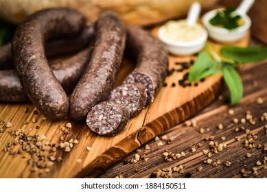
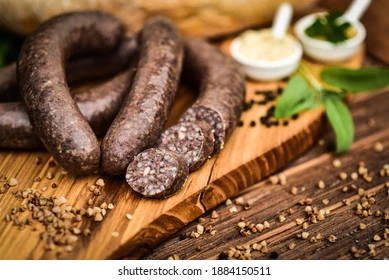
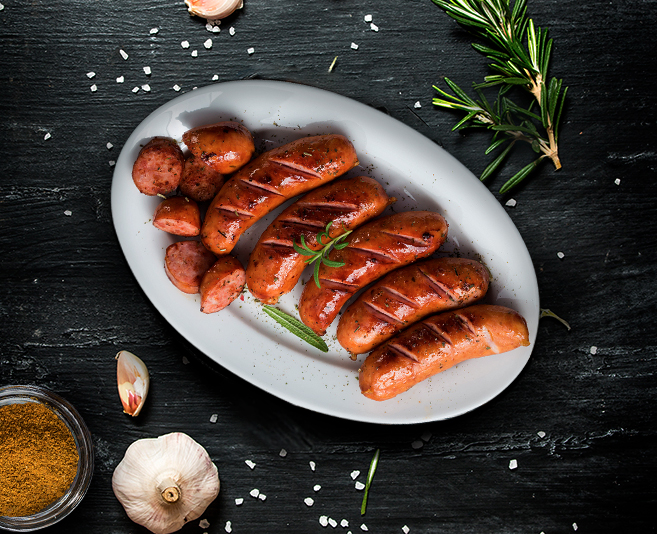

Morcilla
Especialistas en morcilla
Se elabora con sangre y manteca de cerdo, arroz, pimentón, sal y cebolla, así como alguna especia más al gusto. Se embute en tripa de cerdo o también en intestino de vaca seco, más fino.
Especialistas en morcilla
Se elabora con sangre y manteca de cerdo, arroz, pimentón, sal y cebolla, así como alguna especia más al gusto. Se embute en tripa de cerdo o también en intestino de vaca seco, más fino.
Especialistas en chorizo
Los ingredientes que caracterizan el producto denominado chorizo son carne de cerdo, de vacuno en su caso, tocino y grasa de cerdo.